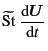
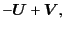
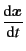
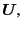
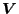
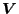

Next: Simple Equation of Motion
Up: Non-Brownian Dynamics Parameters
Previous: Massless Particles
Relatively larger particles are used in some systems like fluidized beds,
where the inertial effect is not negligible anymore.
For such massive particles,
a dynamics presented in Ref. [16,17]
is implemented:
|  |
 |
 |
(2.16) |
|  |
|
 |
(2.17) |
where
is the effective Stokes number
representing the inertial effect of the particle,
 is the particle velocity, and
 is the terminal velocity obtained
by the mobility (or mixed) problem in this case given by
is the particle velocity, and
 is the terminal velocity obtained
by the mobility (or mixed) problem in this case given by
The parameter ``stokes'' in the initialization script
corresponds to
.
In this dynamics, collisions among particles are implemented
not by the contact force but by the momentum exchange
for the contact pairs. The frequency of the contact-check
is controlled by the parameter ``ncol''.
Subsections
Kengo Ichiki 2008-10-12